Possible point group of 8-hedrites
We call 8-hedrite (or octahedrite) a 4-valent graph with eight 3-gons and 4-gons
The classification of possible point groups was obtained in
M. Deza, M.Dutour and M.Shtogrin, "4-valent plane graphs with 2-, 3- or 4-gonal faces", satellite conference (of congress of ISM in Beijing) on algebra and combinatorics 73--97.
- the point group C1
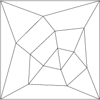
- the point group Cs
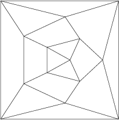
- the point group C2
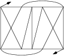
- the point group Ci
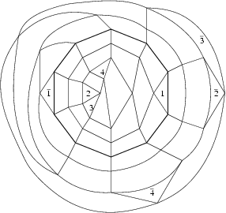
- the point group C2v
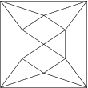
- the point group C2h
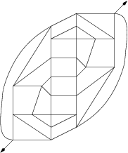
- the point group S4
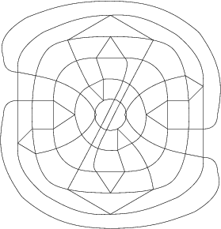
- the point group D2
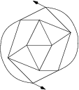
- the point group D2d
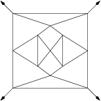
- the point group D2h
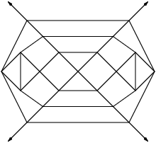
- the point group D3

- the point group D3d
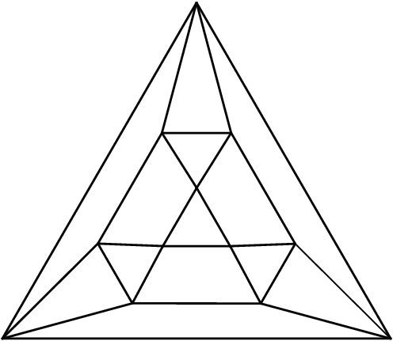
- the point group D3h
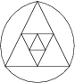
- the point group D4
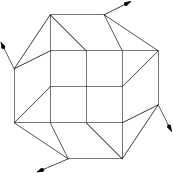
- the point group D4d
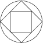
- the point group D4h
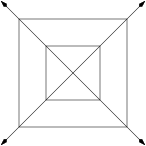
- the point group O
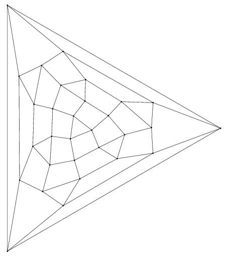
- the point group Oh
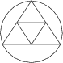